Vakantiehuis Hirondelle
Vakantiehuis Hirondelle
Lief 4 persoons vakantiehuis in het romantische Picardie nabij zee en krijtrotsen
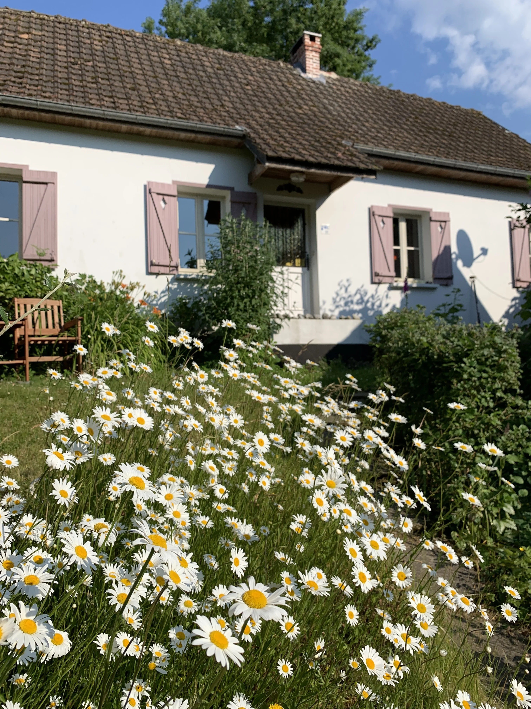
Dit schattig vakantiehuis dateert uit ca. 1900. Het is gelegen in een fraai dal, in het dorpje Bouillancourt. Op een steenworp afstand van de kust, krijtrotsen en de baai van de Somme in Picardie.
Huis
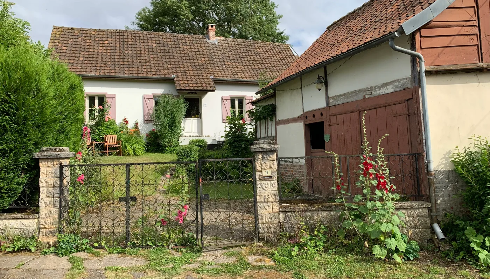

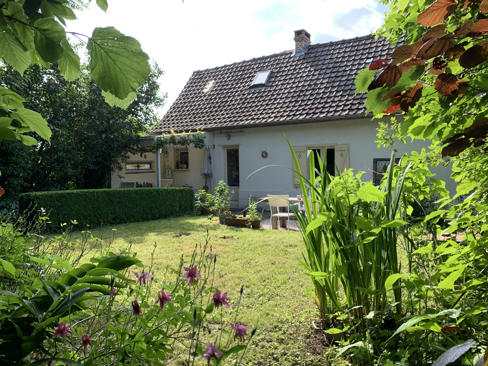
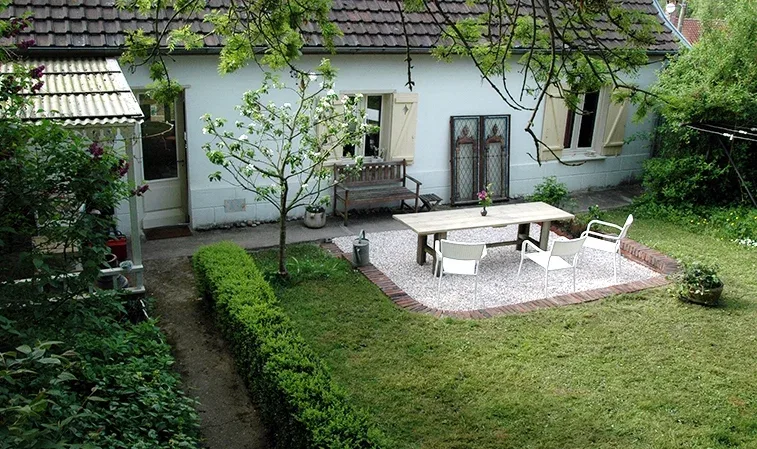
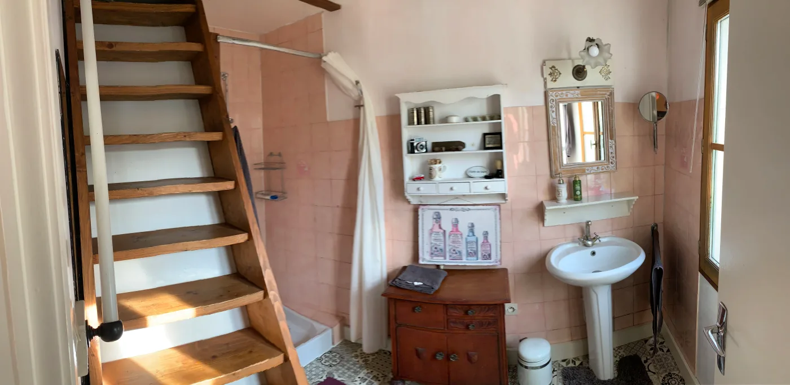
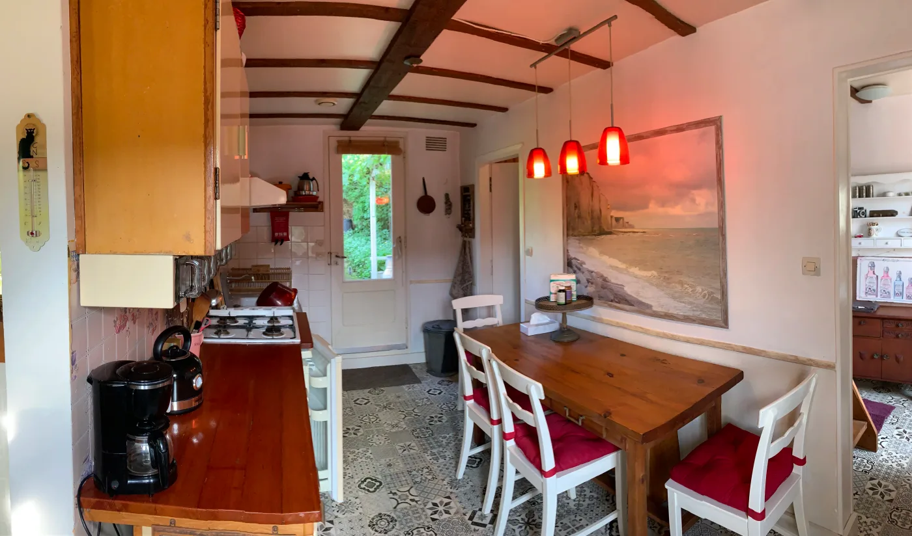
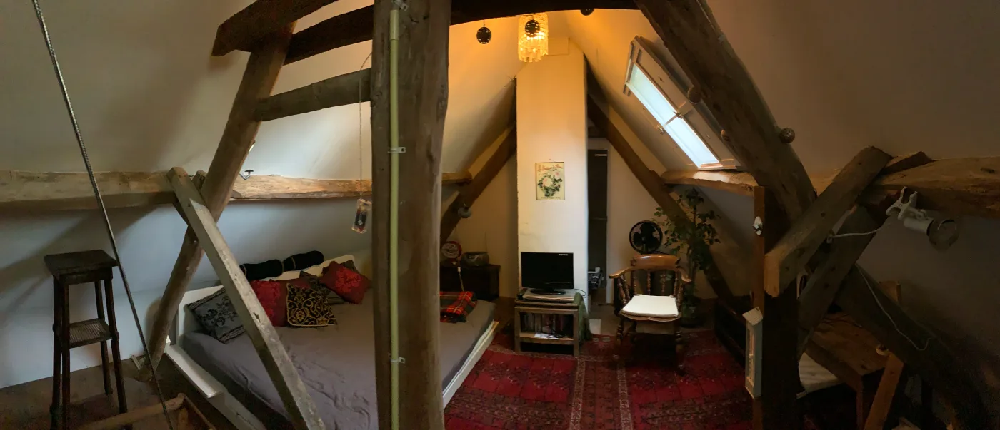
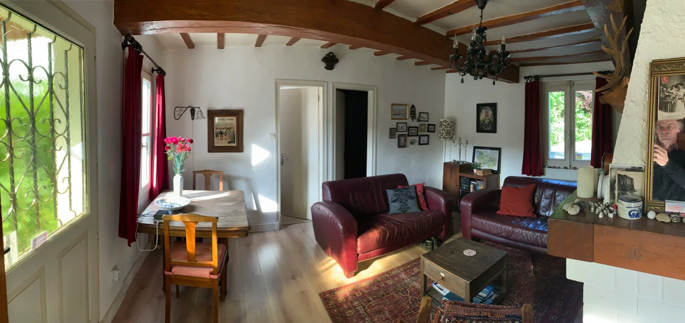
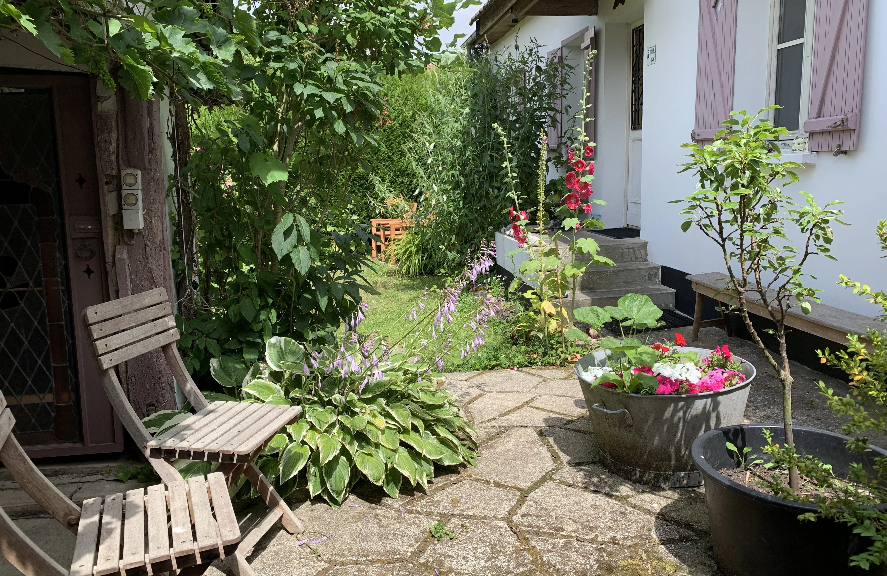
Details
| 4 personen | |
| 3 slaapkamers | |
| 1 badkamer | |
| Volledig ingerichte keuken | |
| Wifi | |
| Roken niet toegestaan |
| Vrijstaand met voor- en achtertuin | |
| TV (kabel en satelliet) | |
| Open haard | |
| Parkeerplaats aan straat | |
| Fietsen | |
| Huisdieren niet toegestaan |
Over dit huisje
Ontdek dit gezellige en stijlvol ingerichte vakantiehuisje in Bouillancourt, Picardie, Frankrijk. Hier geniet je van de landelijke sfeer, rust en Franse nostalgie. Het huis, verwarmd door elektrische kachels en haardvuur, biedt een oase van groen met speelse voor- en achtertuinen vol hazelnoot- en vlierbomen. Pluk verse pepermunt voor thee en ontdek rode besjes en frambozen in de tuin (voorjaar). Vanuit de openstaande ramen luister je in de tuin naar de langspeelplaat van Julien Clerc of andere chansonniers. De tuin biedt zowel schaduw als zon, terwijl de zolder een sfeervolle relax- en slaapruimte is, uitgerust met TV, radio, CD-speler, en goede WIFI. Het huis is ideaal voor liefhebbers van haardvuur, stilte, en ruimte. Geniet van satelliet-tv met vele buitenlandse zenders of gebruik Chromecast om Netflix of je favoriete tv-app van thuis te casten.Bouillancourt is een klein rustig dorpje nabij Abbeville, St. Valery sur Somme, Crotoy en Ault (400 km vanaf Utrecht). Ca. 15 minuten rijden naar strand en krijtrotsen.
Faciliteiten
2-pers. bed (1x)
1-pers. bed (2x)
2-pers. bed (1x)
Basisvoorzieningen
Buiten
Entertainment
Huisregels
- Minimum leeftijd hoofdboeker: 18 jaar.
- Roken is niet toegestaan in dit natuurhuisje.
- Vuurwerk afsteken is niet toegestaan.
- Feesten of evenementen zijn niet toegestaan.
- Dit huisje is niet geschikt voor groepen jongeren, studenten en sportteams.
Aanvullende huisregels worden vermeld bij de algemene voorwaarden, bij het plaatsen van jouw boeking.
Ligging
Omgeving
- Bouillancourt
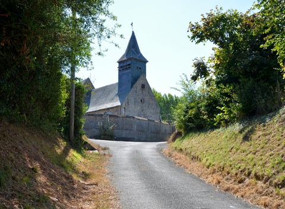
- Afstand 300 m
- Het historisch kerkje van Bouillancourt stamt uit 1519 en is opgebouwd uit locale materialen silex en Torchis (klei vermengd met mest). Niet te bezichtigen helaas. Er zijn maar weinig mensen die de sleutel hebben. In ieder geval de burgemeester.
- Saint Valéry sur Somme
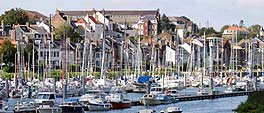
- Afstand 19 km
- Valery sur Somme. Bedrijvig en gezellig stadje met vele bezienswaardigheden. Onder andere: middeleeuws gedeelte met botanische tuin, winkelstraat, VVV, diverse speciale winkels en supermarkten, wandelboulevard, haven, stoomtreintje.
- Le Crotoy
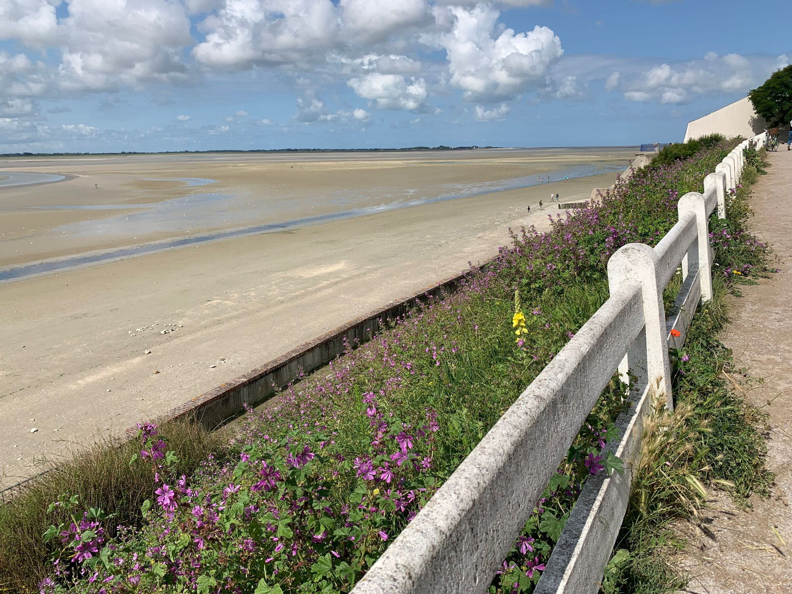
- Afstand 23 km
- Le Crotoy. De vele kleine vissershuisjes karakteriseren dit vissersdorp met haventje. Verder is hier veel te doen: in visgerechten gespecialiseerde restaurantjes, wandelboulevard, wandelen aan het water, wandelen op de drooggevallen baai (bij eb).
- Abbeville
- Afstand 8 km
- Abbeville. Grootste en belangrijkste stad in de omgeving. Rondom de oude basiliek bevindt zich het stadshart. Naast kleine speciaalwinkels bevinden zich hier ook de grotere winkelketens om goed te kunnen shoppen. Rondom het centrum bevinden zich diverse karakteristieke straten waar de bouwstijl van vroeger nog goed zichtbaar is. Het treinstation van Abbeville biedt een uitstekende connectie met grote steden zoals Parijs (1:35min vanaf € 29,10 enkele reis).
Prijzen & beschikbaarheid
Prijzen
Huurprijs van zaterdag - zaterdag
| Seizoen | Prijs |
|---|---|
| ZomervakantieHoogseizoen | € 585,- |
| Mei, herfst, pasen, pinksteren, voorjaars - vakantieMiddenseizoen | € 525,- |
| OverigLaagseizoen | € 495,- |
* Bij de boeking komen de volgende kosten: € 150 borg, € 35 schoonmaakkosten (verplicht), € 20 basis energie (gas, water, elektriciteit), In de huur periode gebruikte Kwh tegen het dan geldende tarief
Beschikbaarheid
Boeken
Beoordelingen
* Deze beoordelingen zijn afkomstig van de website van Natuurhuisje.nl
GJ de 24 juni 2023 - 1 juli 2023
Prachtige natuur van verlerlei aard: Kust, velden met gewas, mooie dalen Algemene beoordeling: 8 Het kwam eerst wat "vol" over qua inrichting, maar dat went snel. Het is verder comfortabel, van alles voorzien.
imkje 3 september 2022 - 24 september 2022
Een rustig dorp met mooie zee en zand en kiezelstranden in de buurt,ook mooie oude stadjes Algemene beoordeling: 8 Een comfortabel, echt Frans brocante huisje
Reinder 28 mei 2022 - 4 juni 2022
Omgeving rond het huis is erg rustig. Je kunt hier heerlijk in de zon en in de schaduw in de tuin zitten. Je hoort veel vogels en de tuin is mooi onderhouden. Vanuit het huis hebben wij in de week dat wij hier waren 3 mooie wandelingen (1 grote en 2 kleine) kunnen maken. Een aanrader is om bijvoorbeeld in de buurt naar het plaatsje Saint-Valery-sur-Somme te gaan. Daar kun je veel bezichtigen en gezellig rondlopen en vanuit deze locatie kun je fietsen huren om een mooie tocht langs de kust en de krijtrotsen te maken. Algemene beoordeling: 9 Het natuurhuisje is erg gezellig en karakteristiek ingericht. Het eten is goed te bereiden, je kunt ook lekker binnen zijn, badkamer is prima en we konden heerlijk rustig slapen.
Nicolien 23 april 2022 - 30 april 2022
Het huisje is in een dorpje op het platteland, in een lieflijke vallei, met op rijafstand diverse boeiende landschappen (wetlands, Baie de Somme met zandbanken, krijtrotskliffen...) om te bezoeken. Een auto is wat dat betreft wel fijn. Algemene beoordeling: 8 Een huisje met een sterke personal touch, heerlijk stukje tuin erbij, fijne haard en een vuurplaats in de tuin, complete, gezellige inrichting.
Michiel 1 augustus 2020 - 15 augustus 2020
Het huisje ligt weliswaar niet direct in de natuur, maar in een klein, slaperig dorpje met daaromheen veel bossen, akkers en weilanden. Fraai wandelen en fietsen door het heuvelachtige landschap! De beek aan het eind van de straat is heerlijk om pootjebadend in af te koelen na een snikhete zomerdag. Klein minpuntje: de vele vroeg actieve hanen en blaffende waakhonden in de buurt. Algemene beoordeling: 9 Heel fijn huisje met alle basics. Ruim genoeg voor een gezin van 4. Het ontbreken van wifi, wasmachine en vaatwasser kan als minpunt gezien worden, maar draagt daarentegen ook bij aan het vakantiegevoel. De voor- en achtertuin bieden meerdere plekken die voor elk moment van de dag geschikt zijn (of je nu zon of juist schaduw wilt). * Inmiddels is er wel wifi aanwezig
Ronald 22 juni 2019 - 29 juni 2019
Prachtige rustige en groene omgeving. Glooiend dus uitdagend om te fietsen en te lopen. Algemene beoordeling: 8 Knus huis met gezellige tuin